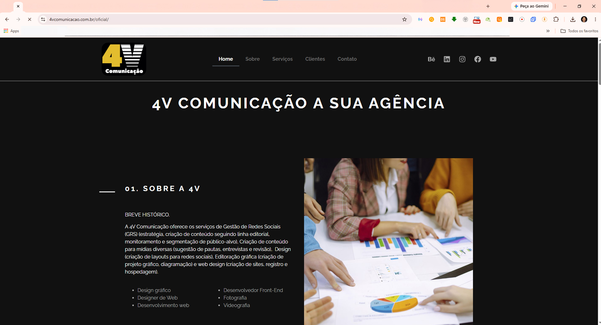
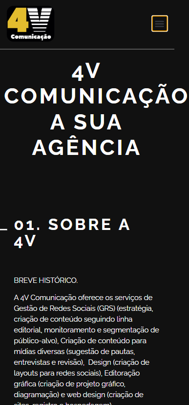
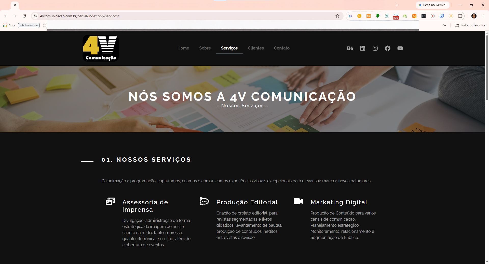

Agência 4V Comunicação
Site institucional criado para apresentar os serviços, o posicionamento e a identidade da Agência 4V Comunicação.

Visão geral
O projeto foi desenvolvido para apresentar a Agência 4V Comunicação de forma profissional, organizando seus serviços, posicionamento e identidade visual em uma experiência digital clara e objetiva.
O desafio
O principal desafio foi organizar os serviços, o posicionamento e as informações institucionais da agência em uma navegação clara, mantendo coerência com a identidade visual e facilitando o contato de potenciais clientes.
Soluções desenvolvidas
- Organização clara dos serviços oferecidos.
- Hierarquia visual para facilitar a leitura.
- Aplicação consistente da identidade da agência.
- Layout adaptado para diferentes tamanhos de tela.
- Chamadas de contato posicionadas de forma estratégica.
Apresentação do projeto
O site foi organizado para apresentar os serviços, o posicionamento e a identidade da Agência 4V Comunicação de forma clara em diferentes tamanhos de tela.



Tecnologias e competências
Principais aprendizados
Durante o desenvolvimento, aprofundei a organização de conteúdo institucional, a criação de hierarquia visual, a aplicação consistente da identidade da marca e a adaptação do layout para diferentes tamanhos de tela.